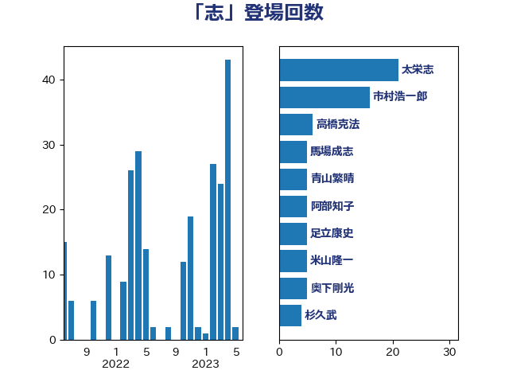

単語「志」

| 高木毅 | 自由民主党 | 18 回 |
| あべ俊子 | 自由民主党 | 17 回 |
| 太栄志 | 立憲民主党 | 11 回 |
| 萩生田光一 | 自由民主党 | 8 回 |
| 足立康史 | 日本維新の会 | 8 回 |
| 平井卓也 | 自由民主党 | 7 回 |
| 細田博之 | 自由民主党 | 6 回 |
| 馬場成志 | 自由民主党 | 6 回 |
| 市村浩一郎 | 日本維新の会 | 5 回 |
| 青山繁晴 | 自由民主党 | 5 回 |
| 高橋克法 | 自由民主党 | 5 回 |
| 奥下剛光 | 日本維新の会 | 4 回 |
| 木原誠二 | 自由民主党 | 4 回 |
| 河野太郎 | 自由民主党 | 4 回 |
| 義家弘介 | 自由民主党 | 4 回 |
| 上月良祐 | 自由民主党 | 3 回 |
| 佐々木さやか | 公明党 | 3 回 |
| 加藤勝信 | 自由民主党 | 3 回 |
| 古川俊治 | 自由民主党 | 3 回 |
| 安江伸夫 | 公明党 | 3 回 |
| 小林鷹之 | 自由民主党 | 3 回 |
| 徳永エリ | 立憲民主党 | 3 回 |
| 田島麻衣子 | 立憲民主党 | 3 回 |
| 細野豪志 | 自由民主党 | 3 回 |
| 茂木敏充 | 自由民主党 | 3 回 |
| 青山大人 | 立憲民主党 | 3 回 |
| 馬場伸幸 | 日本維新の会 | 3 回 |
| 丹羽秀樹 | 自由民主党 | 2 回 |
| 山下芳生 | 日本共産党 | 2 回 |
| 岸信夫 | 自由民主党 | 2 回 |
| 松島みどり | 自由民主党 | 2 回 |
| 浜田聡 | NHK党 | 2 回 |
| 渡辺創 | 立憲民主党 | 2 回 |
| 石井浩郎 | 自由民主党 | 2 回 |
| 細田健一 | 自由民主党 | 2 回 |
| 舞立昇治 | 自由民主党 | 2 回 |
| 薗浦健太郎 | 自由民主党 | 2 回 |
| 鈴木俊一 | 自由民主党 | 2 回 |
| ながえ孝子 | 無所属 | 1 回 |
| 三木亨 | 自由民主党 | 1 回 |
| 三浦信祐 | 公明党 | 1 回 |
| 上川陽子 | 自由民主党 | 1 回 |
| 上野通子 | 自由民主党 | 1 回 |
| 中島克仁 | 立憲民主党 | 1 回 |
| 伊藤孝恵 | 国民民主党 | 1 回 |
| 加田裕之 | 自由民主党 | 1 回 |
| 勝目康 | 自由民主党 | 1 回 |
| 勝部賢志 | 立憲民主党 | 1 回 |
| 原口一博 | 立憲民主党 | 1 回 |
| 古川元久 | 国民民主党 | 1 回 |
| 古川禎久 | 自由民主党 | 1 回 |
| 吉川赳 | 無所属 | 1 回 |
| 吉田統彦 | 立憲民主党 | 1 回 |
| 國場幸之助 | 自由民主党 | 1 回 |
| 堂故茂 | 自由民主党 | 1 回 |
| 大岡敏孝 | 自由民主党 | 1 回 |
| 太田房江 | 自由民主党 | 1 回 |
| 安達澄 | 無所属 | 1 回 |
| 小川淳也 | 立憲民主党 | 1 回 |
| 小沼巧 | 立憲民主党 | 1 回 |
| 小渕優子 | 自由民主党 | 1 回 |
| 小熊慎司 | 立憲民主党 | 1 回 |
| 小西洋之 | 立憲民主党 | 1 回 |
| 尾辻秀久 | 無所属 | 1 回 |
| 山井和則 | 立憲民主党 | 1 回 |
| 山崎正恭 | 公明党 | 1 回 |
| 山崎誠 | 立憲民主党 | 1 回 |
| 山東昭子 | 自由民主党 | 1 回 |
| 山谷えり子 | 自由民主党 | 1 回 |
| 岡本三成 | 公明党 | 1 回 |
| 島尻安伊子 | 自由民主党 | 1 回 |
| 川田龍平 | 立憲民主党 | 1 回 |
| 後藤祐一 | 立憲民主党 | 1 回 |
| 打越さく良 | 立憲民主党 | 1 回 |
| 早稲田ゆき | 立憲民主党 | 1 回 |
| 杉本和巳 | 日本維新の会 | 1 回 |
| 森山浩行 | 立憲民主党 | 1 回 |
| 榛葉賀津也 | 国民民主党 | 1 回 |
| 横山信一 | 公明党 | 1 回 |
| 橘慶一郎 | 自由民主党 | 1 回 |
| 浮島智子 | 公明党 | 1 回 |
| 深澤陽一 | 自由民主党 | 1 回 |
| 清水貴之 | 日本維新の会 | 1 回 |
| 牧野たかお | 自由民主党 | 1 回 |
| 石垣のりこ | 立憲民主党 | 1 回 |
| 笠井亮 | 日本共産党 | 1 回 |
| 米山隆一 | 立憲民主党 | 1 回 |
| 荒井優 | 立憲民主党 | 1 回 |
| 藤井比早之 | 自由民主党 | 1 回 |
| 藤木眞也 | 自由民主党 | 1 回 |
| 赤嶺政賢 | 日本共産党 | 1 回 |
| 足立敏之 | 自由民主党 | 1 回 |
| 野田国義 | 立憲民主党 | 1 回 |
| 金城泰邦 | 公明党 | 1 回 |
| 金田勝年 | 自由民主党 | 1 回 |
| 鈴木宗男 | 日本維新の会 | 1 回 |
| 鈴木庸介 | 立憲民主党 | 1 回 |
| 鈴木憲和 | 自由民主党 | 1 回 |
| 長峯誠 | 自由民主党 | 1 回 |
| 音喜多駿 | 日本維新の会 | 1 回 |
| 高橋千鶴子 | 日本共産党 | 1 回 |
| 高階恵美子 | 自由民主党 | 1 回 |
| 鬼木誠 | 立憲民主党 | 1 回 |
| 麻生太郎 | 自由民主党 | 1 回 |